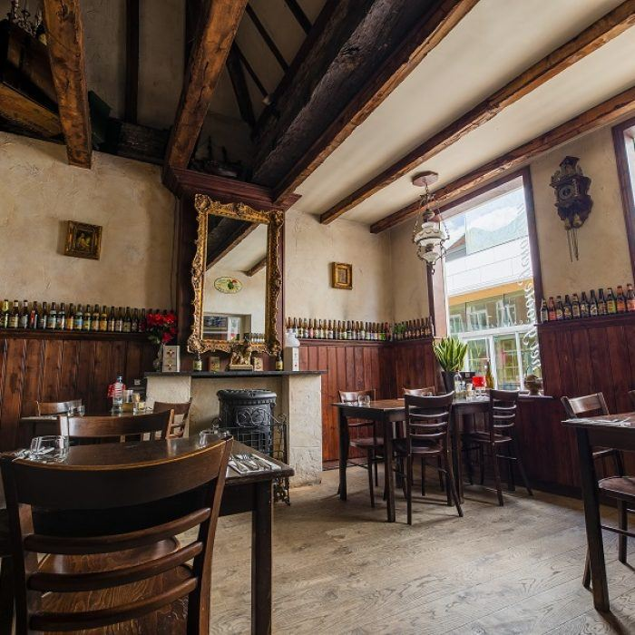
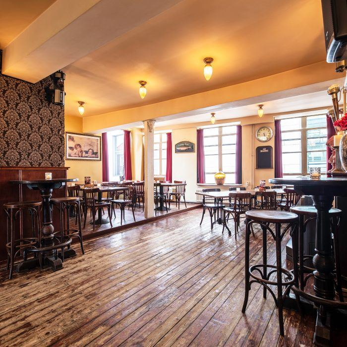
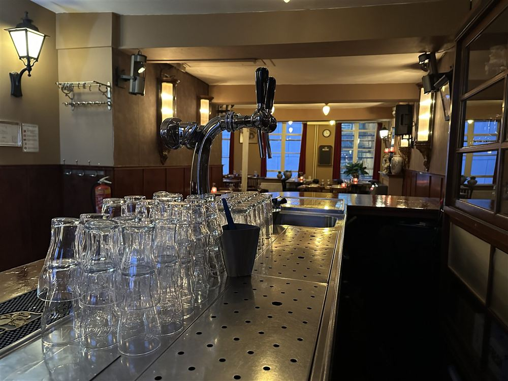

Private Dining
Vanaf 10 personen
Wij reserveren een van onze gezellige ruimtes alleen voor uw gezelschap, zonder dat u gestoord wordt door andere gasten. De tafels zetten we neer zoals u wilt: een lange tafel voor een vergaderdiner, kleine tafeltjes voor een brainstorm, of denk aan uw familiediner of receptie.
Kies uit ons à-la-cartemenu of de Bier Pruuverij voor een avondvullend programma met alleen uw eigen gezelschap.

De Euforie
Zaalverhuur vanaf 30 personen
Op de eerste verdieping van ons historische pand vindt u ons sfeervolle café De Euforie, met een eigen bar met tappunten en koelingen, een geluidsinstallatie en een lichtshow. Voor groepen vanaf 30 personen huurt u het café volledig af.
Ook geschikt voor bruiloften, (bedrijfs)feesten, informele vergaderingen, bijeenkomsten, babyborrels en gender-reveal parties. Een medewerker verzorgt uw drankjes en hapjes. Even komen kijken? Loop gerust binnen.

Feesten & bruiloften
All-in pakket
Ook voor uw feest of bruiloft kunt u bij het Groote Genoegen terecht, niet alleen om heerlijk te dineren maar zeker ook om uw feest te geven. Met ons all-in pakket bent u verzekerd van een zorgeloze avond: denk aan afkoop van drank, (borrel)hapjes, diner voor uw gasten en nog veel meer.
Parkeergarage De Wolvenhoek ligt op loopafstand, dus ook uw gasten vinden een plek.